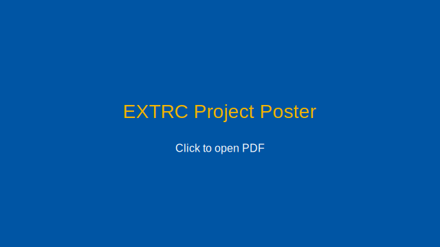

Project Overview
This project integrates an optimised Rational Closure (RC) implementation with a topic-aware knowledge base generator and an interactive explainer UI. Together, these components make defeasible reasoning more scalable, interpretable, and usable for education and debugging.
Team
- Julia Cotterrell <cttjul001@myuct.ac.za>
- Jethro Dunn <dnnjet002@myuct.ac.za>
- Nevaniah Gounden <gndnev002@myuct.ac.za>
Supervisor: Prof. Tommie Meyer — Second Reader: Johan Bontes
Live Demo
External, non-permanent link.Poster
Joint Deliverables
Individual Contributions
Julia Cotterrell
Interactive UI for RC with dual-mode explanations (symbolic + natural language).
Jethro Dunn
Natural language generation for synthetic knowledge bases to improve interpretability.
Nevaniah Gounden
Optimisations for RC (parallelisation, memoization, multi-rank traversal) and evaluation.
Source Code
Please add a compressed archive of the project source code here (e.g., source/extrc_code.zip).
This static site links only to files within this package.
- Placeholder: add
source/extrc_code.zipto this folder before zipping for submission.
Contact
Department of Computer Science, University of Cape Town — Tel: +27 (0)21 650 2663 — Website